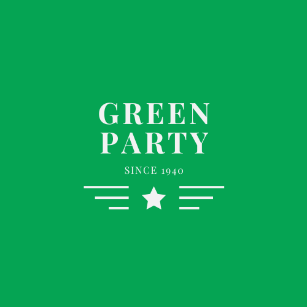
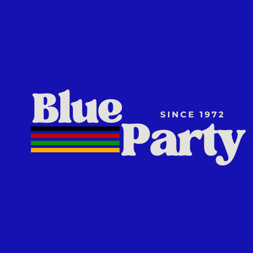

ElectionsStat
K. Oosthuiyzen
Kevin Oosthuiyzen
Registered Voter
My Profile
Account Settings
Need Help?
Sign Out
Dashboard
Home
Dashboard
Filter By
National
Provincial
Regional
National Blue Party
| Currently
3 240 000
27%
of national votes
Filter By
National
Provincial
Regional
National Green Party
| Currently
3 000 000
25%
of national votes
Filter By
National
Provincial
Regional
People's Change Party
| Currently
1 200 000
10%
of national votes
Filter By
National
Provincial
Regional
National Yellow Party
| Currently
4 560 000
38%
of national votes
Filter By
National
Provincial
Regional
National Votes Overall
/Currently
Parties Election Statements
| Today
Party
Statements

The National Green Party is the oldest political party in South Africa, founded in 1940. The party won the 1994 elections by a landslide. The party says it is confident it will bounce back from the decline experienced in the 2019 national elections.
The National Yellow Party says it is confident in its campaign and believes citizens will make a well-informed choice for their next ruling party. The party saw an increase in their 2019 elections and belive that they are prepared to become South Africa's new ruling party.

The National Blue Party believes that it will remain the ruling party of South Africa. Spokesman of the party encourages voters to not be swayed by public opinions and fearmongering from opposition parties, and insists voters should make informed decisions for the benefit of all citizens.
The People's Choice Party believes that voters will make the right choice as they cast their votes. Secretary General of the party believes they have done everything necessary to gain the support of South Africans and says no other party has been on the ground with citizens like the People's Choice Party.
ElectionsStat would like to wish all voters a seamless, fair and impartial voting process. Please adhere to all voting protocols to ensure all votes are casted and counted accurately.